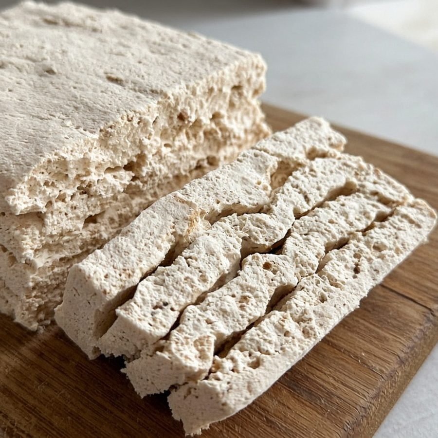
№01Белёвская пастила
Яблоки, сахар, яичный белок — классика 200 г
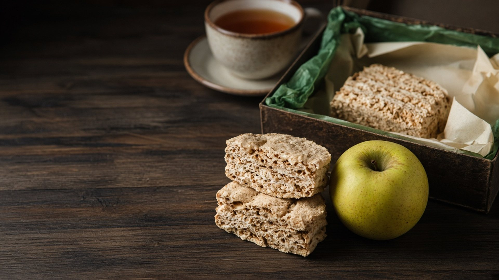
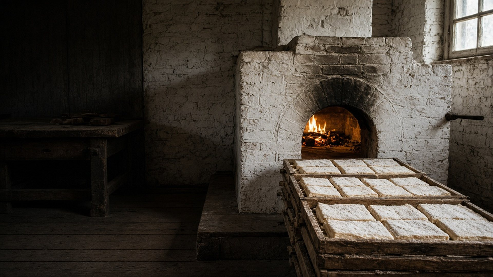

Только натуральные ингредиенты и проверенный временем рецепт.
1881 год рецепта10+ линеек100% ручная работа
1881год рецепта
10+линеек продукции
БелёвТульская обл.
производство

№01Яблоки, сахар, яичный белок — классика 200 г
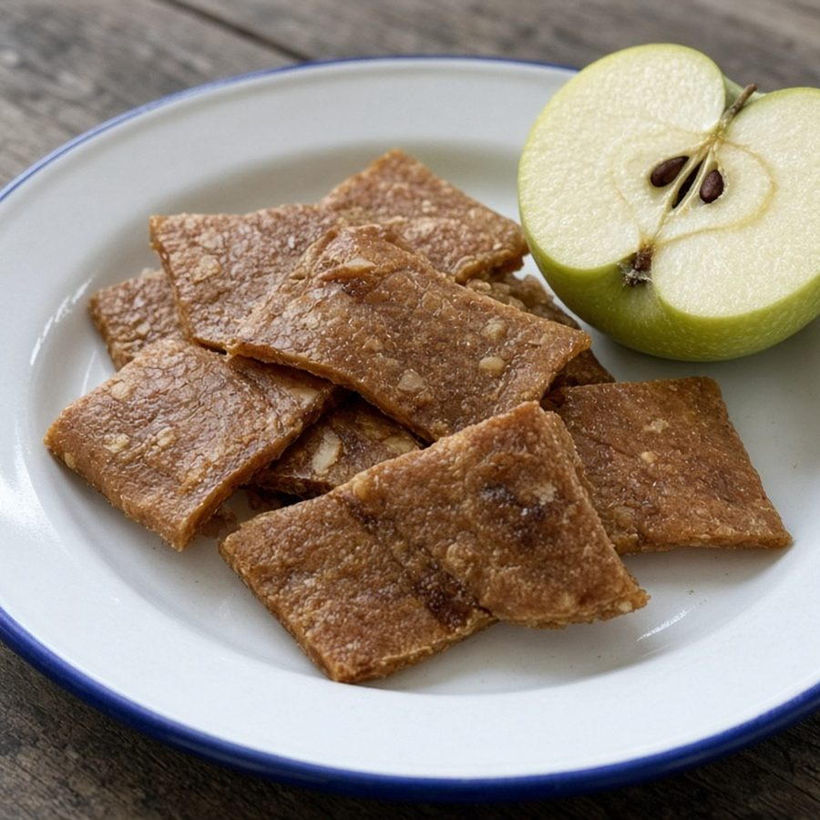
№02Яблоки и белок. Сахара природного происхождения
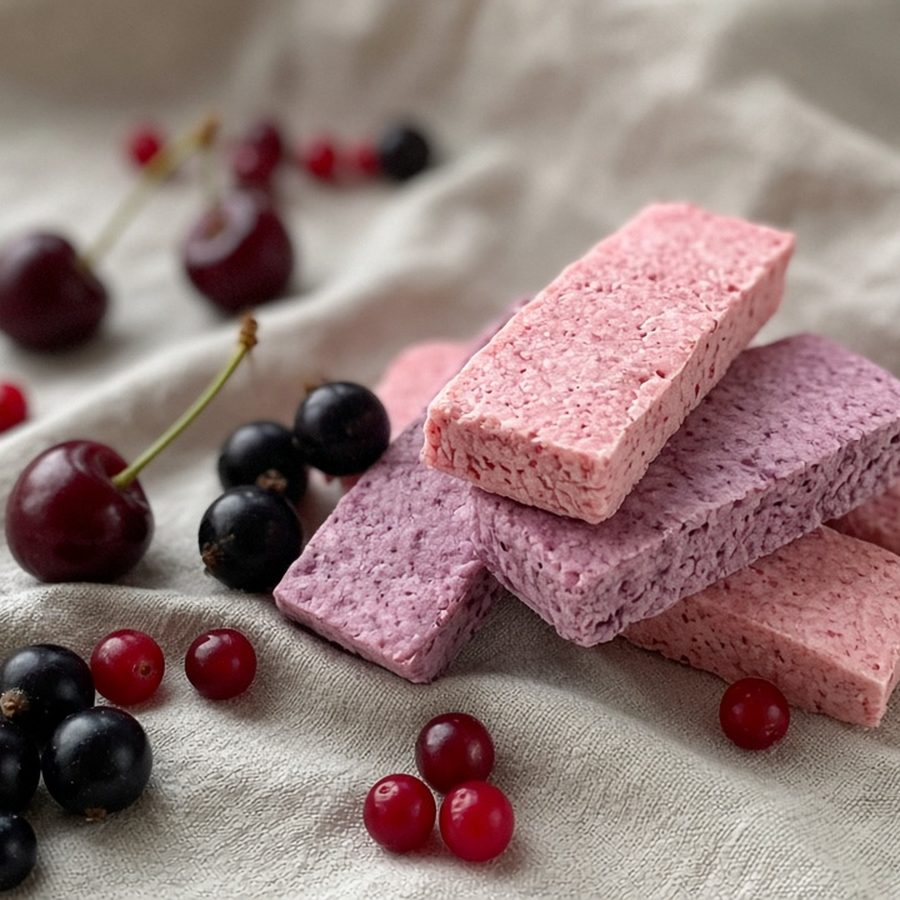
№03Клюква, брусника, вишня, чёрная смородина
Лёгкая яблочная сладость по фирменной технологии
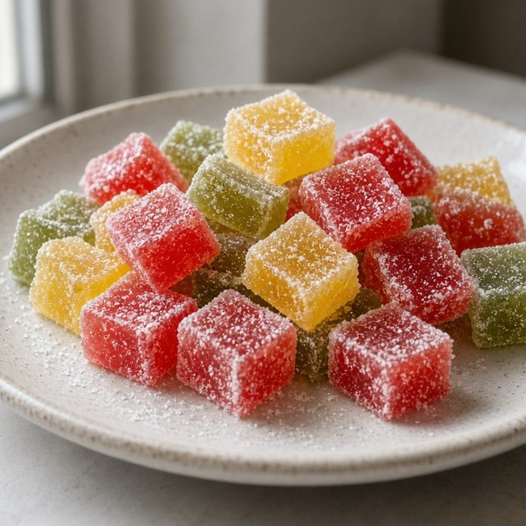
№05Плотнее промышленных аналогов — основа сок
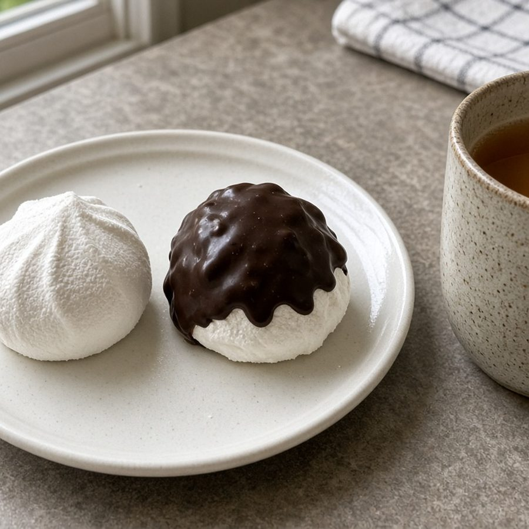
№06Ваниль, антоновка, кофе — и в шоколадной глазури
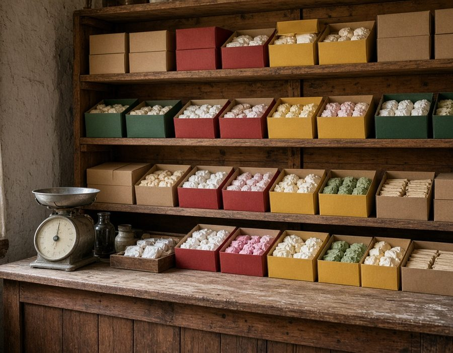
№07Хрустящие сухарики из пастильной линейки
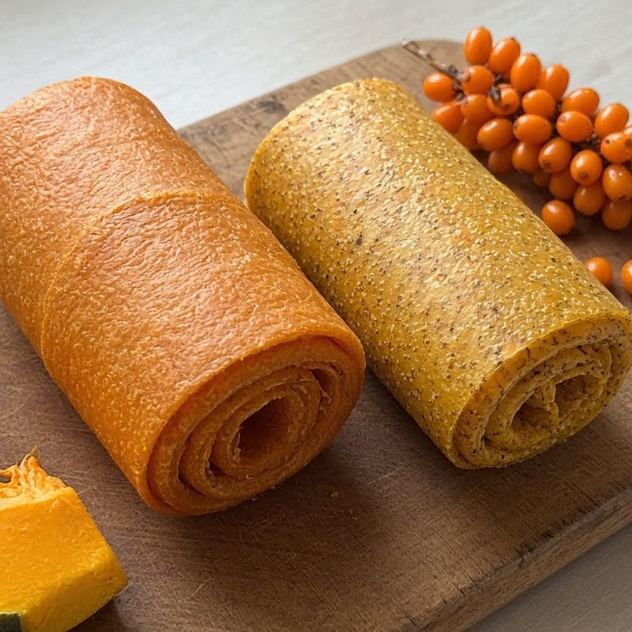
№08Яблочно-тыквенная и яблочно-облепиховая, без сахара
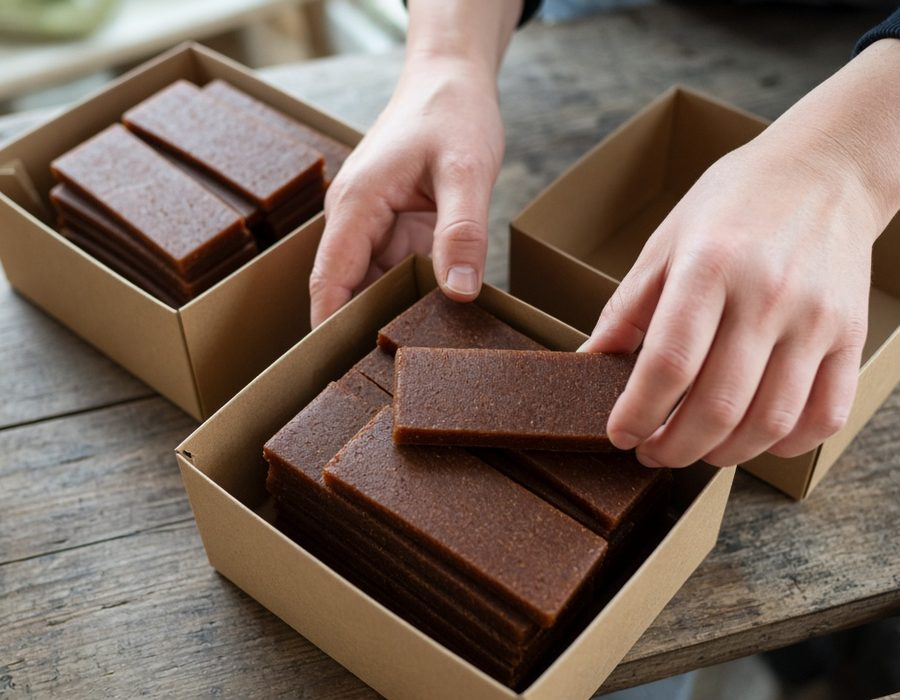
№09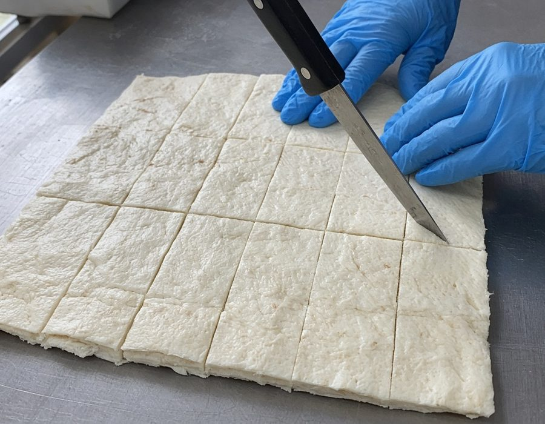
№10Компактный формат — ягодные и яблочные батончики
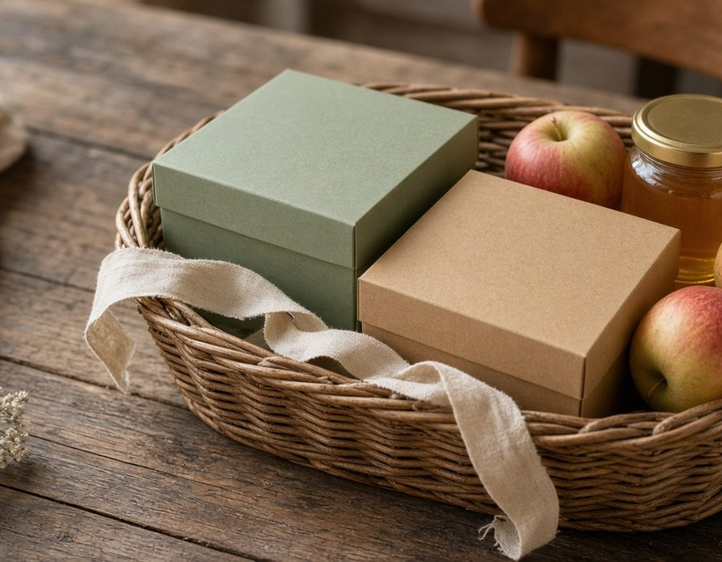
№11Новинки мануфактуры — следите за обновлениями
Только натуральные ингредиенты и проверенный временем рецепт.
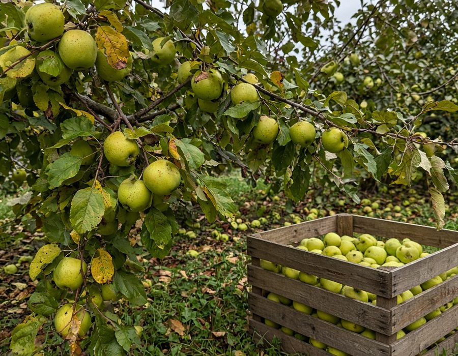
01Сочные антоновские яблоки — основа нежнейшего пюре.
 02
02Готовим в русской печи, построенной в XIX веке. До сих пор.
Яичные белки, ягоды, орехи или корица — небольшие партии, без конвейера.
Белевская Пастила создается исключительно вручную из сочных антоновских яблок по неизменной уникальной технологии.
По сей день мастера готовят пастилу в русской печи, которая была построена в XIX веке.
Нежнейшее яблочное пюре, яичные белки и цельные ягоды, орешки или корица — только натуральные ингредиенты и проверенный временем рецепт создают подлинный вкус пастилы.
Директор Белёвской пастильной мануфактуры сам показывает, как устроена работа — от яблока до коробки. Без глянца.
@dulliugu в TikTokНаборы из пастилы, зефира и мармелада — под любой повод.
Смотреть каталогГеография присутствия продукции мануфактуры по России.
Выставки, миссии и встречи с ценителями пастилы.
30-я юбилейная международная выставка продуктов питания. Павильон №7, зал 3, стенд № 73 А 10.
Участие в выставках, бизнес-миссиях и деловых миссиях по России, СНГ и миру.
29-я международная выставка. Павильон №7, зал 3, стенд № 73 А 10.
Работаем с магазинами, сетями и теми, кто хочет пастилу под своей маркой.
Фирменный магазин в Белёве и партнёры по России — от Москвы до юга.
Связаться →Поставки для магазинов, кафе и маркетплейсов. Напишите — пришлём прайс.
Запросить прайс →Продукция под вашей маркой — от рецепта до коробки.
Обсудить СТМ →Готовы обсудить поставки и представительство за рубежом.
Написать →